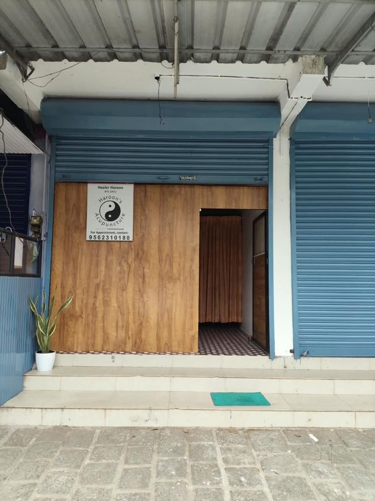
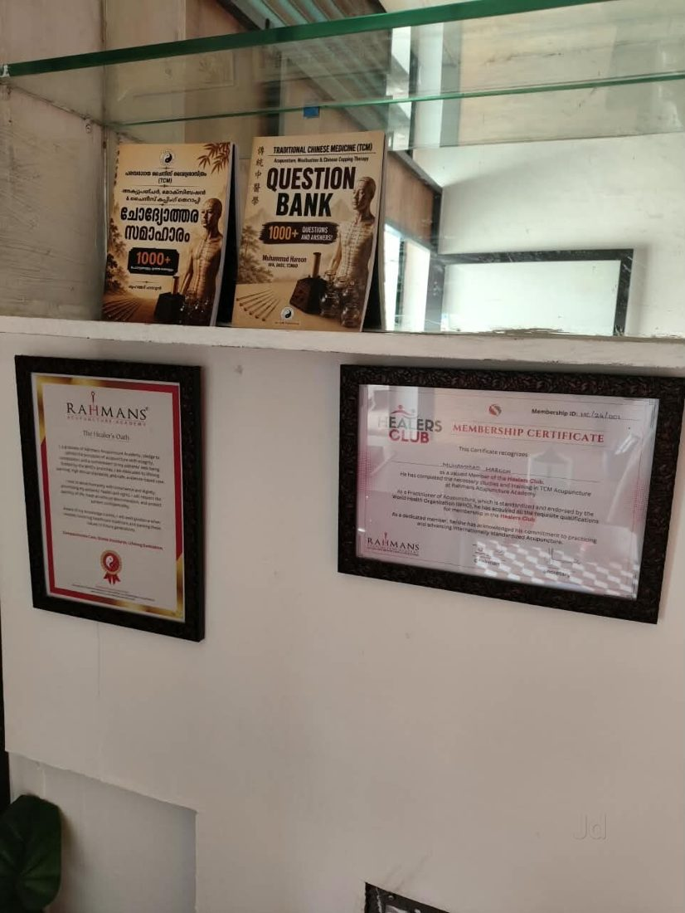
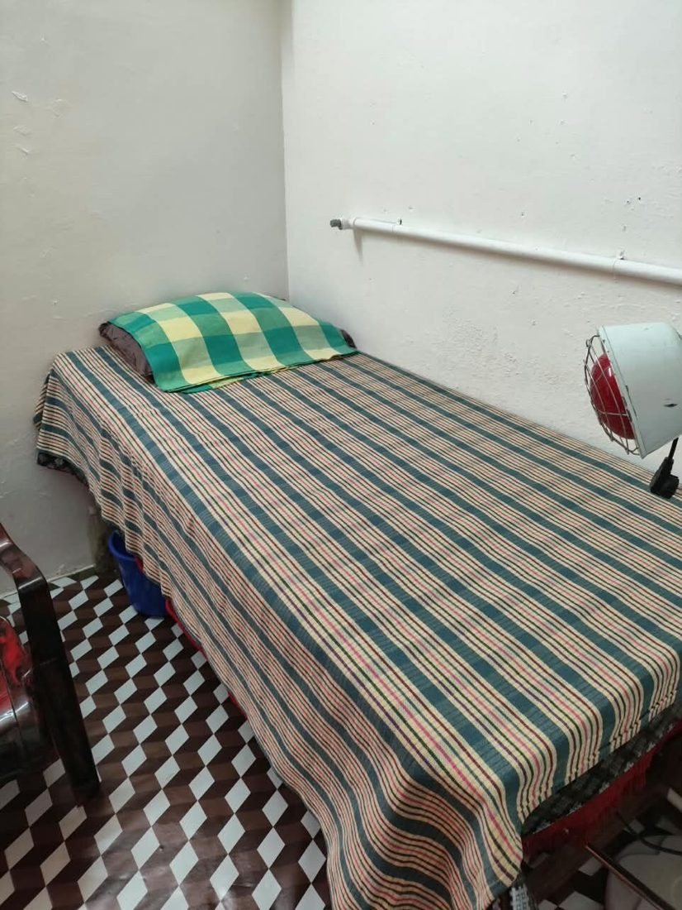
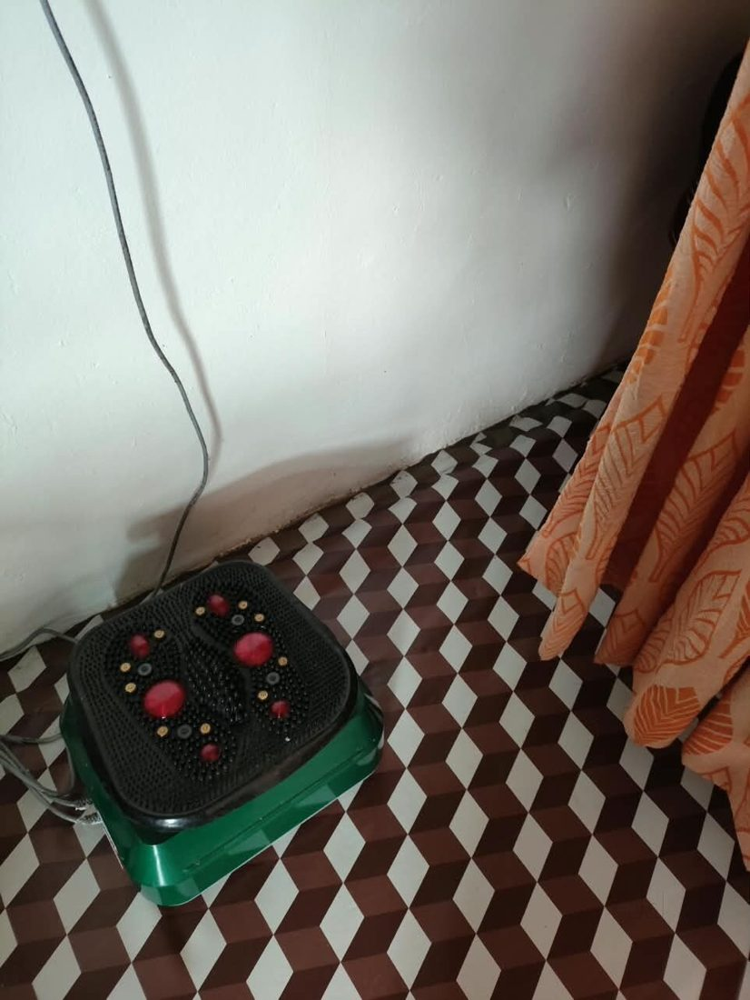
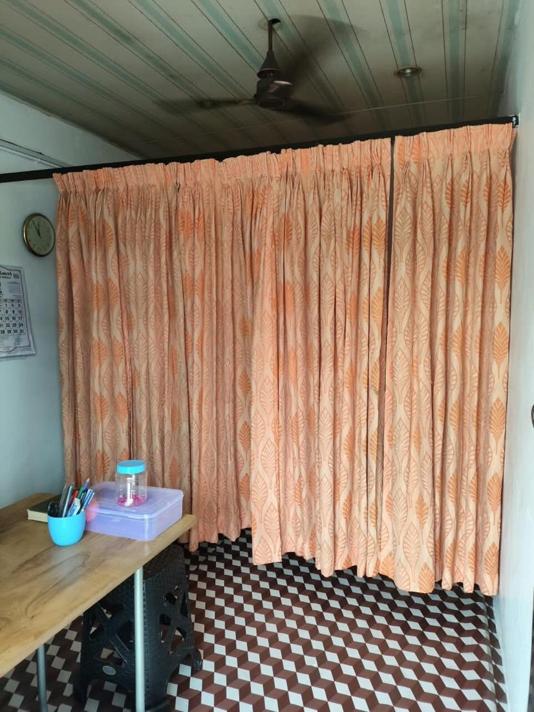
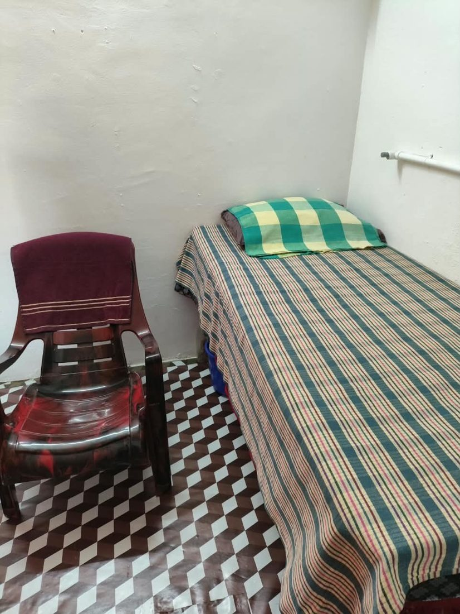

Acupuncture care in Kothamangalam.Healer Haroon, DASC, TCMAD.
TCM അക്യുപങ്ചർ ഉപയോഗിച്ച് നിങ്ങളുടെ ആരോഗ്യം വീണ്ടെടുക്കൂ!
Traditional Chinese Medicine care for pain, headaches and stress, at Pallarimangalam. Calm, private and unhurried visits.

What we treat
Tap a treatment to read more. Your first visit starts with a conversation about what you are feeling.
Acupuncture
Fine needles are placed at specific points to help the body’s energy flow in balance. It can be used alongside modern medicine.
Back, neck and shoulder pain
Many people visit for long-standing stiffness and aches from desk work, driving or physical labour.
Migraine and headache
Regular sessions are often used to manage recurring headaches. Treatment is planned around your pattern.
Joint and muscle pain
Knees, hips, elbows and muscles that feel tight or sore, helped with acupuncture, warmth and gentle therapy.
Stress and sleep
A quiet session to help you relax, with advice you can follow at home.
Cupping and moxibustion
Traditional Chinese cupping therapy and moxibustion (warming herb therapy) are offered where suitable.
Results differ from person to person. Acupuncture does not replace emergency care. In an emergency, go to a hospital.
Meet Healer Haroon
Healer Haroon practises Traditional Chinese Medicine acupuncture with the qualifications DASC and TCMAD, and is a member of the Healers Club through Rahmans Acupuncture Academy.
He has also written a Traditional Chinese Medicine question bank in English and Malayalam. Every visit is calm, private and unhurried.
ആയിരക്കണക്കിന് വർഷങ്ങളായി നിലനിൽക്കുന്ന പരമ്പരാഗത ചൈനീസ് വൈദ്യശാസ്ത്രത്തിന്റെ ഭാഗമാണ് അക്യുപങ്ചർ.

Inside the clinic
A simple, clean space. Scroll sideways to look around.




Health tips from Healer Haroon
Videos on health, acupuncture, acupressure and wellness. They are for learning and do not replace a check-up.
Common questions
Where is Haroon’s Acupuncture?
In the Salafi Masjid Building on Pidavoor Road, Adivad, Pallarimangalam PO, Kothamangalam, 686671.
Do I need an appointment?
Monday to Thursday, 9 am to 5 pm, you can visit the clinic. On other days, please book ahead by phone or WhatsApp on 9562310180.
Does acupuncture hurt?
The needles are very fine. Most people feel little more than a mild pressure or tingling. Tell Healer Haroon if you feel uncomfortable.
How many sessions will I need?
It depends on your condition and how long you have had it. Healer Haroon will explain the plan after talking with you.
Can I have acupuncture along with my medicines?
Many people do. Bring your prescriptions and reports to the first visit, and keep taking your medicines unless your doctor says otherwise.
Which areas do patients come from?
Kothamangalam, Pallarimangalam, Adivad, Pidavoor, Muvattupuzha, Thodupuzha and Koovalloor.
Patients from nearby places
Kothamangalam Pallarimangalam Adivad Pidavoor Muvattupuzha Thodupuzha Koovalloor हिन्दी
Visit or book
Opening hours
Monday to Thursday, 9 am to 5 pm.
Other days by prior appointment.
Address
Salafi Masjid Building, Pidavoor Road,
Adivad, Pallarimangalam PO,
Kothamangalam, 686671